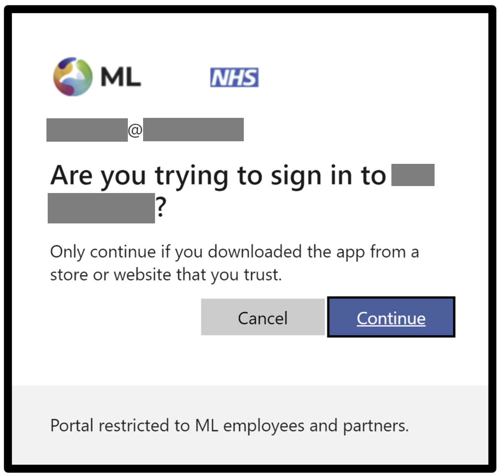

Coffee & Coding
May 16, 2024
Because:
To prevent data commits:
git add .) when staging‘It depends’, but if it’s sensitive:
A data security breach may have to be reported.
We’ll talk about two main options for The Strategy Unit:
Which to use? It depends.
⚠️ {pins} is not great because:
{pins} is helpful because:
Microsoft cloud storage for unstructured data or ‘blobs’ (Binary Large Objects): data objects in binary form that do not necessarily conform to any file format.
How is it different?
Store sensitive info in an .Renviron file that’s kept out of your Git history! The info can then be loaded in your script.
.Renviron:
AZ_STORAGE_EP=https://STORAGEACCOUNT.blob.core.windows.net/Script:
Tip: reload .Renviron with readRenviron(".Renviron")
In the demo script we are providing, you will need these environment variables:
token <- AzureAuth::get_azure_token(
"https://storage.azure.com",
tenant = tenant,
app = app_id,
auth_type = "device_code",
)The first time you do this, you will have link to authenticate in your browser and a code in your terminal to enter. Use the browser that works best with your @mlcsu.nhs.uk account!

endpoint <- AzureStor::blob_endpoint(ep_uri, token = token)
container <- AzureStor::storage_container(endpoint, container_name)
# List files in container
blob_list <- AzureStor::list_blobs(container)If you get 403 error, delete your token and re-authenticate, try a different browser/incognito, etc.
To clear Azure tokens: AzureAuth::clean_token_directory()
It’s possible to interact with the container via your browser!
You can upload and download files using the Graphical User Interface (GUI), login with your @mlcsu.nhs.uk account: https://portal.azure.com/#home
Although it’s also cooler to interact via code… 😎
df_from_azure <- AzureStor::storage_read_csv(
container,
"newdir/cats.csv",
show_col_types = FALSE
)
# Load file directly from Azure container (by storing it in memory)
parquet_in_memory <- AzureStor::storage_download(
container, src = "newdir/cats.parquet", dest = NULL
)
parq_df <- arrow::read_parquet(parquet_in_memory)Learn more about Data Science at The Strategy Unit